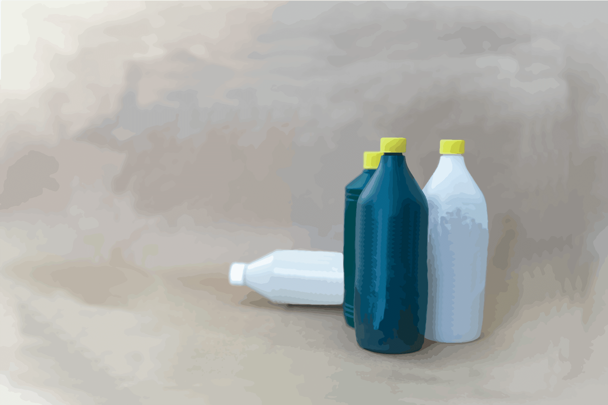
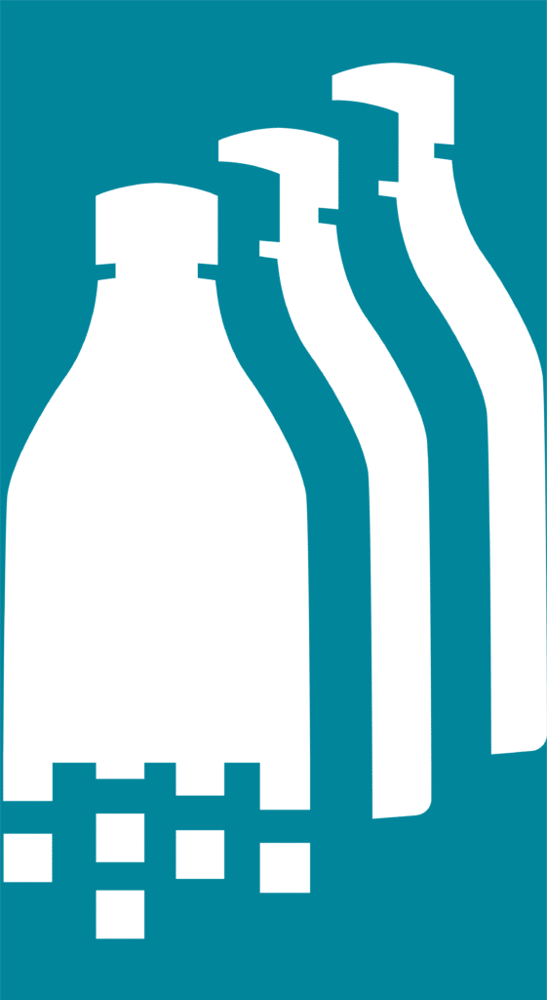
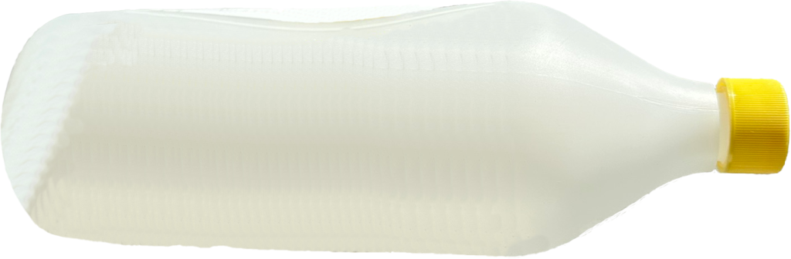
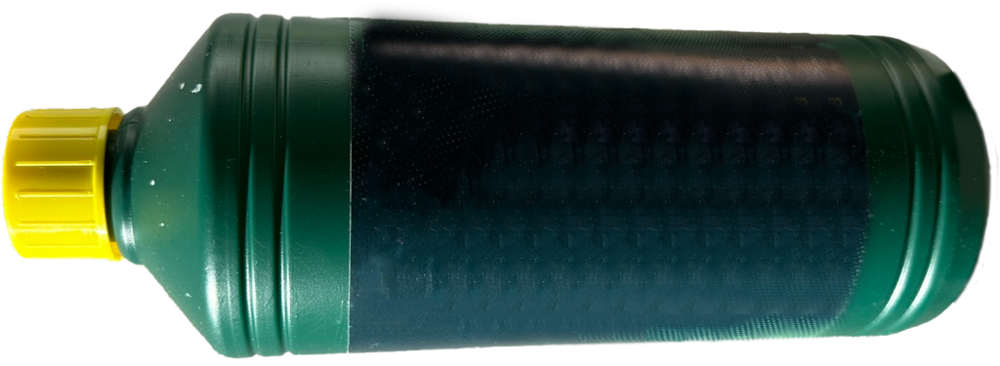
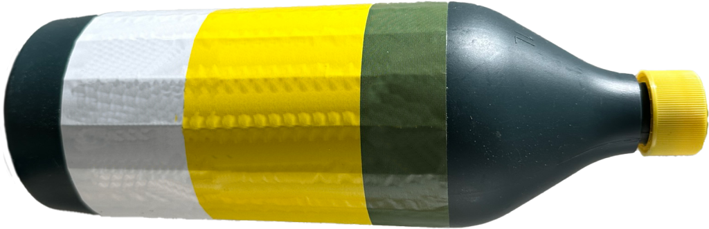
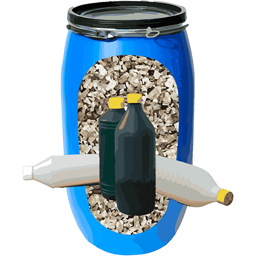
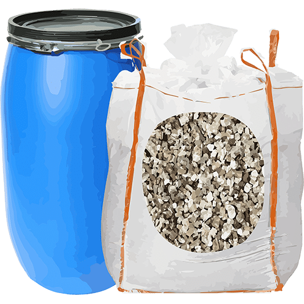
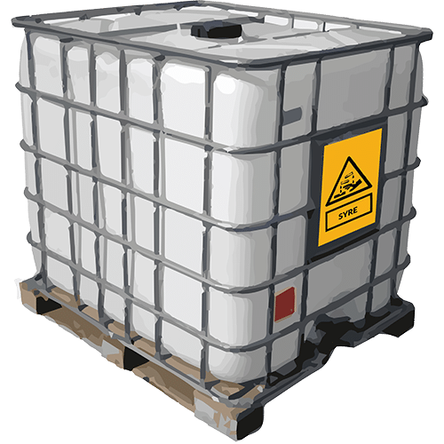
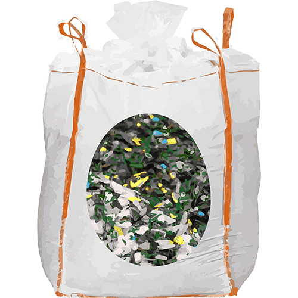

– Din partner i miljøvenlig og sikker affaldshåndtering

Hos Dansk Kemisortering specialiserer vi os i håndteringen af plastbeholdere med kemi – specifikt syrer og baser. Disse beholdere indsamles fra private forbrugere, der har sorteret dem som farligt affald, hvorefter de på genbrugspladserne pakkes i spændelåsfade med vermiculit.

I dagens Danmark er standardproceduren at brænde det farlige affald – inklusive spændelåsfade med indhold. Selvom det er en effektiv måde at minimere risikoen for miljø- og sundhedsskader, er det ikke den mest bæredygtige løsning.

Vores mål, hos Dansk Kemisortering, er at ændre denne praksis inden for affaldshåndtering af farligt affald ved at introducere og implementere bæredygtige alternativer. Vi tror på genbrug og genanvendelse af materialer, hvor det er muligt.
Det er egentlig ganske enkelt hvad vi gør – vi modtager en samlet pakke fra de genbrugsstationer vi samarbejder med – så pakker vi den op og deler den ud i forskellige fraktioner.




Kontakt os gerne for muligheder i at købe UN-godkendte spændelåsfade og vermiculite
Vores mission er at gøre affaldshåndtering sikker, effektiv og miljøvenlig. Ved at vælge Dansk Kemisortering som din partner, bidrager du aktivt til en grønnere fremtid og støtter innovation inden for affaldshåndtering.
Vil du høre mere? Så tøv ikke med at kontakte os – måske skal dit farlige affald forby os inden det brændes af?